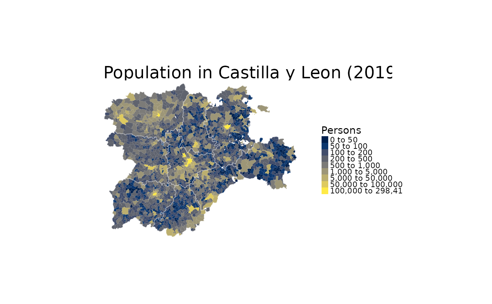

Returns municipalities of Spain as polygons at a specified scale.
esp_get_munic() uses GISCO (Eurostat) as source. Please use
giscoR::gisco_attributions()
esp_get_munic_siane() uses CartoBase ANE as source, provided by
Instituto Geografico Nacional (IGN), http://www.ign.es/web/ign/portal.
Years available are 2005 up to today.
esp_get_munic(
year = "2019",
epsg = "4258",
cache = TRUE,
update_cache = FALSE,
cache_dir = NULL,
verbose = FALSE,
region = NULL,
munic = NULL,
moveCAN = TRUE
)
esp_get_munic_siane(
year = Sys.Date(),
epsg = "4258",
cache = TRUE,
update_cache = FALSE,
cache_dir = NULL,
verbose = FALSE,
resolution = 3,
region = NULL,
munic = NULL,
moveCAN = TRUE,
rawcols = FALSE
)IGN data via a custom CDN (see https://github.com/rOpenSpain/mapSpain/tree/sianedata).
Release year. See Details for years available.
projection of the map: 4-digit EPSG code. One of:
"4258": ETRS89
"4326": WGS84
"3035": ETRS89 / ETRS-LAEA
"3857": Pseudo-Mercator
A logical whether to do caching. Default is TRUE. See
About caching.
A logical whether to update cache. Default is FALSE.
When set to TRUE it would force a fresh download of the source file.
A path to a cache directory. See About caching.
Logical, displays information. Useful for debugging,
default is FALSE.
A vector of names and/or codes for provinces
or NULL to get all the municipalities. See Details.
A name or regex expression with the names of
the required municipalities. NULL would not produce any filtering.
A logical TRUE/FALSE or a vector of coordinates
c(lat, lon). It places the Canary Islands close to Spain's mainland.
Initial position can be adjusted using the vector of coordinates. See
Displacing the Canary Islands.
Resolution of the polygon. Values available are
"3", "6.5" or "10".
Logical. Setting this to TRUE would add the raw columns of
the dataset provided by IGN.
A sf polygon
The years available are:
esp_get_munic(): year could be one of "2001", "2004", "2006", "2008",
"2010", "2013" and any year between 2016 and 2019.
See giscoR::gisco_get_lau(), giscoR::gisco_get_communes().
esp_get_munic_siane(): year could be passed as a single year ("YYYY"
format, as end of year) or as a specific date ("YYYY-MM-DD" format).
Historical information starts as of 2005.
When using region you can use and mix names and NUTS codes
(levels 1, 2 or 3), ISO codes (corresponding to level 2 or 3) or
"cpro" (see esp_codelist).
When calling a superior level (Province, Autonomous Community or NUTS1) , all the municipalities of that level would be added.
You can set your cache_dir with esp_set_cache_dir().
Sometimes cached files may be corrupt. On that case, try re-downloading
the data setting update_cache = TRUE.
If you experience any problem on download, try to download the
corresponding .geojson file by any other method and save it on your
cache_dir. Use the option verbose = TRUE for debugging the API query.
While moveCAN is useful for visualization, it would alter the actual
geographic position of the Canary Islands. When using the output for
spatial analysis or using tiles (e.g. with esp_getTiles() or
addProviderEspTiles()) this option should be set to FALSE in order to
get the actual coordinates, instead of the modified ones.
giscoR::gisco_get_lau(), base::regex().
Other political:
esp_codelist,
esp_get_can_box(),
esp_get_capimun(),
esp_get_ccaa(),
esp_get_country(),
esp_get_gridmap,
esp_get_nuts(),
esp_get_prov()
Other municipalities:
esp_get_capimun(),
esp_munic.sf
# \donttest{
# Get munics
Base <- esp_get_munic(year = "2019", region = "Castilla y Leon")
# Provs for delimiting
provs <- esp_get_prov(prov = "Castilla y Leon")
# Load population data
data("pobmun19")
# Arrange and create breaks
Base_pop <- merge(Base, pobmun19,
by = c("cpro", "cmun"),
all.x = TRUE
)
br <- sort(c(
0, 50, 100, 200, 500,
1000, 5000, 50000, 100000,
Inf
))
Base_pop$cuts <- cut(Base_pop$pob19, br, dig.lab = 20)
# Plot
library(ggplot2)
ggplot(Base_pop) +
geom_sf(aes(fill = cuts), color = NA) +
geom_sf(data = provs, fill = NA, color = "grey70") +
scale_fill_manual(values = hcl.colors(length(br), "cividis")) +
labs(
title = "Population in Castilla y Leon",
subtitle = "INE, 2019",
fill = "Persons"
) +
theme_void()

# }